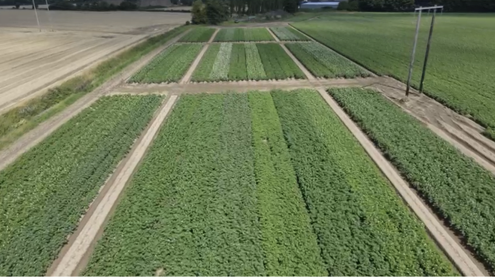

At Haggard Stores, our commitment to agricultural innovation has never been stronger. In the dynamic world of potato farming, where growers constantly face challenges like rising production costs, strict fertilizer use regulations, and the phasing out of various chemicals, we've taken proactive steps. Our primary goal: to identify and cultivate potato varieties that not only thrive under these evolving conditions but also align with the specific needs of Crisping Processors and Fresh Chip manufacturers. In 2021, we embarked on a comprehensive journey, reaching out to numerous potato breeders across Europe. Our mission was simple yet ambitious: to find new potato varieties that could adapt to Irish growing conditions, flourish with reduced fertilizer inputs, and meet the rigorous standards of processing specifications from harvest to storage. Our efforts bore fruit in 2022 with the planting of 28 different crisping varieties under stringent farming conditions. We didn't just grow these varieties; we meticulously monitored them, analyzing yield, dry matter content, tuber characteristics, and crucial processing factors like reducing sugars. But our work didn't stop there. Recognizing the evolving industry needs, we expanded our 2023 trials to include 27 crisp varieties and introduced 20 new chipping varieties. This ongoing endeavor underscores our dedication to supporting Irish potato growers, helping them navigate this changing landscape sustainably and profitably.
Over the years our growers have been facing new challenges on an ongoing basis with increasing costs of production, ever increasing restrictions on fertiliser use and ongoing loss of various chemistry used in the production of potatoes, the need for varieties with a low carbon footprint. This is particularly the case in the potato sector where it is getting more and more challenging every year. We made a decision that we needed to find new varieties that the perform well with these criteria in mind but also meet with Crisping Processors & Fresh Chip needs and got them involved to ensure that the varieties we trailed were suitable for their requirements at the various stages in the storage and calendar year. So in 2021 we contacted most of the different potato breeders all across Europe looking for new potato varieties that may be suitable to Irish growing conditions, that would perform with reduced fertiliser inputs and that we could manage will the loss of various plant protection protects. Also most importantly supply processing specifications from off the field right through to July the following year out of store ensuring good cooking quality. In 2022 we planted 28 different crisping varieties in 4m x 50m plots, these were grown commercially under current farming restrictions. In August each year before harvesting we have open day where we invite all Irish potato growers to view the plots growing we had organised representatives from the various potato breeders to attend where they met and discussed various topics on their varieties from growing to harvesting and storage attributes. We harvest and put into a commercial Store.

At harvest we measured all the varieties yields and dry matters, tuber counts and sizes etc, noted any defects and measured their reducing sugars which is critical in processing. Defects and Sugars were checked each month from October until end of June the following year. We have concluded our results to these trials grown in 2022 in a report for the growers and the processing sector and will do the same again this year. We have continued the trial for 2023 with 27 crisp varieties but this time we have added Chipping Varieties. For Crisping we screened the varieties and selected which the ones we put in our trial for 2023 and added new ones on breeders recommendations and scrutiny of variety specifications. We have selected 20 Chip varieties as in previous trial we researched, on breeder recommendations and discussions with chipping industry. That would grow well under Irish conditions, store well and deliver the specifications and cooking quality that industry expects from off the field all the way through to end of June out of storage. With our trials programme we are endeavouring to support the Irish potato grower in this ever changing environment helping them grow sustainably and profitably into the future, the correct specifications and quality all year round that the processing industry expects. Up to now large amounts of the fresh chip industry has been supplied from the UK, lack of potato quality and reliability of supply are the reasons the industry give for this.